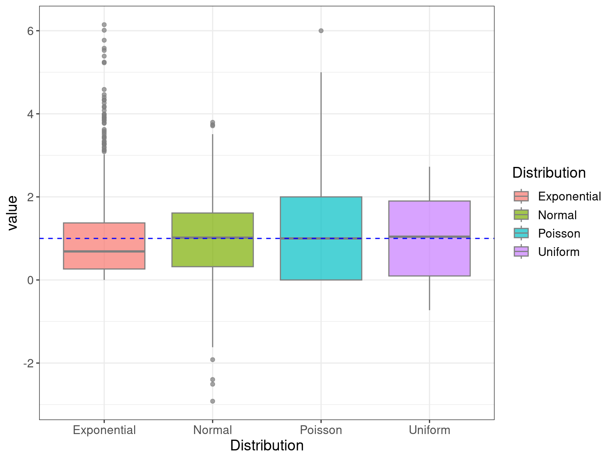

?DistributionsBasic Statistics
BODL R Training
Dr Stevie Pederson
Black Ochre Data Labs
Telethon Kids Institute
February 17, 2023
Basic Statistical Techniques
Introduction
Rhas it’s origins as a statistical analysis language (i.e.S)- Purpose of this session is NOT to teach statistics
- I am a Bioinformatician NOT statistician
- How do we perform simple analyses in R?
- Up to you to know what you’re doing
- Or talk to your usual statistician
Distributions
Rcomes with nearly every distribution- Standard syntax for accessing each
Distributions
| Distribution | Density | Area Under Curve | Quantile | Random |
|---|---|---|---|---|
| Normal | dnorm() |
pnorm() |
qnorm() |
rnorm() |
| T | dt() |
pt() |
qt() |
rt() |
| Uniform | dunif() |
punif() |
qunif() |
runif() |
| Exponential | dexp() |
pexp() |
qexp() |
rexp() |
| \(\chi^2\) | dchisq() |
pchisq() |
qchisq() |
rchisq() |
| Binomial | dbinom() |
pbinom() |
qbinom() |
rbinom() |
Distributions
- Also Poisson, Beta, \(\Gamma\), Log-Normal, F, Geometric, Cauchy, Hyper-geometric etc…
Distributions
Take a random sample from a few important distributions
These were all sampled from distributions with \(\mu = 1\); \(\sigma = 1\)
Distributions
- Normal
- The most common distribution (i.e. Bell Curve)
- Most statistical theory developed for this type of data
- Uniform
- Can appear anywhere within a range, with equal probability
- Most common example: \(p\)-values under \(H_0\)
- Exponential
- Continuous data
- Common example is the time between events occurring
- Poisson
- Discrete (i.e. count) data
- Number of phone calls per minute
- Number of alignments per kb
Distributions
Why are the sample means & std. deviations not exactly equal to 1?
| Distribution | \(\hat{\mu}\) | \(\hat{\sigma}\) |
|---|---|---|
| Normal | 0.9492 | 0.9949 |
| Uniform | 0.9323 | 1.021 |
| Exponential | 0.9529 | 0.9316 |
| Poisson | 1.007 | 1.012 |
All Densities

All Densities
Basic Tests
Data For This Session
We’ll use the toothData dataset we saw yesterday
- Length of teeth in rats
- Two vitamin C supplementation methods
- Three dose levels
Data For This Session
t-tests
- Data should be normally distributed
- \(t\)-tests always test \(H_0\) Vs \(H_A\)
- (We may not always do meaningful tests today)
t-tests
- The simplest test is on a simple vector
- The below is a bit of a dumb test
- Demonstrates the code (not the statistics)
What is \(H_0\) in the above test?
\[ H_0: \mu = 0\\ H_A: \mu \neq 0 \]
t-tests
\[ H_0: \mu_{1} = \mu_{2} \\ H_A: \mu_{1} \neq \mu_{2} \]
We could use two vectors (i.e. x & y)
Is this a paired test?
t-tests
\[ H_0: \mu_{1} = \mu_{2} \\ H_A: \mu_{1} \neq \mu_{2} \]
Or we could use the R formula method:
len~supp: len (the response) is dependent on supp (the predictor)
Did this give the same results?
Working With Objects of Class htest()
- The results of
t.test()are of classhtest
res
##
## Welch Two Sample t-test
##
## data: len by supp
## t = -1.9153, df = 55.309, p-value = 0.06063
## alternative hypothesis: true difference in means between group VC and group OJ is not equal to 0
## 95 percent confidence interval:
## -7.5710156 0.1710156
## sample estimates:
## mean in group VC mean in group OJ
## 16.96333 20.66333- When we type the object name:
print()is called print()actually looks for a functionprint.htest()- This is known as an
S3method- More on these later
Working With Objects of Class htest()
- We know these objects are just a list
- Can grab any values we want
names(res)
## [1] "statistic" "parameter" "p.value" "conf.int" "estimate"
## [6] "null.value" "stderr" "alternative" "method" "data.name"
res$statistic
## t
## -1.915268
res$parameter
## df
## 55.30943
res$p.value
## [1] 0.06063451
res$conf.int
## [1] -7.5710156 0.1710156
## attr(,"conf.level")
## [1] 0.95- We can place these inline using `
r`
Working With Objects of Class htest()
panderis excellent for formatting the complete results
Working With Objects of Class htest()
tidy()from the packagebroomwill produced atibble()
library(broom)
tidy(res)
## # A tibble: 1 × 10
## estim…¹ estim…² estim…³ stati…⁴ p.value param…⁵ conf.…⁶ conf.…⁷ method alter…⁸
## <dbl> <dbl> <dbl> <dbl> <dbl> <dbl> <dbl> <dbl> <chr> <chr>
## 1 -3.7 17.0 20.7 -1.92 0.0606 55.3 -7.57 0.171 Welch… two.si…
## # … with abbreviated variable names ¹estimate, ²estimate1, ³estimate2,
## # ⁴statistic, ⁵parameter, ⁶conf.low, ⁷conf.high, ⁸alternativeWilcoxon Tests
- We assumed the data was normally distributed: What if it’s not?
- Non-parametric alternative is the Wilcoxon Rank-Sum (aka Mann-Whitney)
\[ H_0: \text{Distribution}_1 = \text{Distribution}_2 \\ H_A: \text{Distribution}_1 \neq \text{Distribution}_2 \]
Wilcoxon Tests
- This assigns ranks to each value based on their value
- Tied values can be problematic
- Test is based on ranks not values
- Still produces an object f class
htest
res <- wilcox.test(len~supp, data = toothData)
class(res)
## [1] "htest"
names(res)
## [1] "statistic" "parameter" "p.value" "null.value" "alternative"
## [6] "method" "data.name"
res
##
## Wilcoxon rank sum test with continuity correction
##
## data: len by supp
## W = 324.5, p-value = 0.06449
## alternative hypothesis: true location shift is not equal to 0\(\chi^2\) Test
- Here we need counts
- Often a \(2 \times 2\) table
- Commonly used in Observed Vs Expected
\[ H_0: \text{No dependence between groups and outcome}\\ H_A: \text{Dependence between groups and outcome} \]
\(\chi^2\) Test
res <- chisq.test(pass)
names(res)
## [1] "statistic" "parameter" "p.value" "method" "data.name" "observed"
## [7] "expected" "residuals" "stdres"
class(res)
## [1] "htest"
res
##
## Pearson's Chi-squared test with Yates' continuity correction
##
## data: pass
## X-squared = 9.8359, df = 1, p-value = 0.001711Can anyone remember when we shouldn’t use a \(\chi^2\) test?
Fisher’s Exact Test
- \(\chi^2\) tests became popular in the days of the printed tables
- We now have computers
- Fisher’s Exact Test is preferable in the cases of low cell counts
- Uses the hypergeometric distribution
- Same \(H_0\) as the \(\chi^2\) test
fTest <- fisher.test(pass)
names(fTest)
## [1] "p.value" "conf.int" "estimate" "null.value" "alternative"
## [6] "method" "data.name"
class(fTest)
## [1] "htest"
fTest
##
## Fisher's Exact Test for Count Data
##
## data: pass
## p-value = 0.0008527
## alternative hypothesis: true odds ratio is not equal to 1
## 95 percent confidence interval:
## 1.960512 32.639000
## sample estimates:
## odds ratio
## 7.464139Basic Hypothesis Testing
- \(t\)-tests
- Wilcoxon Rank-Sum tests (aka Mann-Whitney)
- \(\chi^2\) tests
- Fisher’s Exact Test
Basic Hypothesis Testing
All tests gave similar looking output.
- Objects of class
htest - These are list objects
Regression
Linear Regression
Recap: We are trying to estimate a line
\[ y = ax + b \]
Or
\[ y = \beta_0 + \beta_1 x \]
Linear Regression
Linear Regression always uses the R formula syntax
y ~ xmeansyis a function ofx- We use the function
lm() - The Intercept term is assumed unless explicitly removed (
~ 0 + ...)
Linear Regression
What is the structure of this object?
Linear Regression
- It looks like
supp == VCreduces the length of the teeth - In reality we’d like to see if dose has an effect as well
- It looks like an increasing dose-level increases length
Linear Regression | Interaction Terms
Do the values for supp == VC stay -3.70 below supp == OC?
- We could include an interaction term
- It looks like at the higher doses, this difference disappears
Linear Regression | Interaction Terms
An alternative way to write the previous model is:
Linear Regression | Model Selection
Which model should we choose?
Linear Regression
Are we happy with our model assumptions?
- Normally distributed
- Constant Variance
- Linear relationship
Other Statistical Tools
Mutiple Testing in R
The function p.adjust() takes the argument method = ...
- We can select from
c("fdr", "BH", "BY", "holm", "bonferroni")
Also the package multcomp is excellent
PCA
- Here we have 50 genes, from two T cell types: Stimulated & Resting
PCAneeds a matrix, so I’ll transform as I load
PCA
- Our variable of interest here is the cell-types (columns)
- We need to set that as the row variable:
- Transpose the data using
t() - Run
PCAusingprcomp()
PCA
If we’d like to see how our samples group:
- Create a
tibbleusing the sample names
PCA
The co-ordinates on each component are in pcaGenes$x
Now we can convert to a data.frame and left_join()
Making Plots Interactive
- The package
plotlyenables interactive plots - We need to specify all variables in the “tool-tip”
Making Plots Interactive
We can add any custom parameter to a plot
Making Plots Interactive
Making Plots Interactive
We can select the parameters to show in the tool-tip